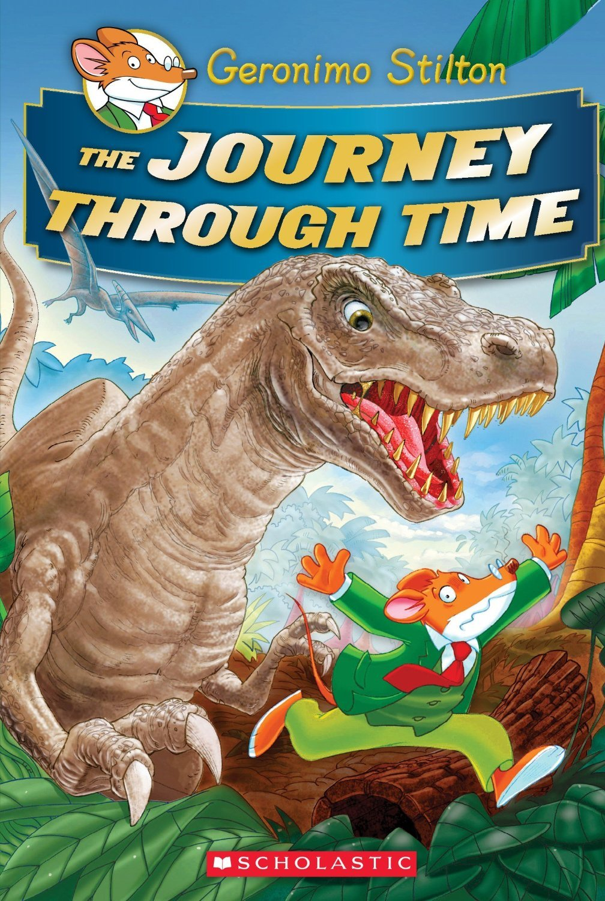

The Journey Through Time - Elisabetta Dami

When Geronimo Stilton receives an invitation from Professor Von Volt
to journey back in time, he couldn't refuse. His family decides to join him in this adventure
through time in the Professor's time machine, to the glorious yesterdays of the past. From
the time of the Egyptians to the court of King Arthur, they travel back and forth in time in
an adventure for all time. However, the perils Geronimo faces might be too much to handle,
even for the amazing gifts of the mouse as he faces monster after monster: from a T-Rex to
a Crocodile in the Nile, and to top it all off, he has to save a princess from an evil knight.
Holy Cheese! Boys and girls, join Geronimo in his most dangerous adventure yet!
To go to the thank you page, click here!